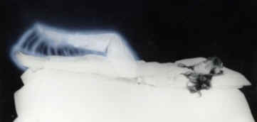

Generalities About Projective Techniques
Rule. Any
intraphysical consciousness (physical person), even during the agony of
biological death, can temporarily project consciously from his own body.
Theoretically, there are no known

Difficulties. Those who are totally ignorant of the conscious projection and are also beginners face four basic difficulties regarding lucid projections:
162.01. The process in itself, i.e., the consciousness projecting itself outside the human body.
162.02. The temporary achievement and maintenance of extraphysical lucidity.
162.03. Remembering the extraphysical events which were experienced.
162.04. Translating into words, in a pure form, the psychophysical and extraphysical sensations of the conscious projection.
Holochakra. The mechanisms of the various methods indicated subsequently can be explained by the alteration of the structure of the holochakra or its relation between the human body and psychosoma.
Techniques. The development of those who practice conscious projections are not the same, for there are many differences among individuals, and all projective results depend, above all, upon the individual person. You, interested reader, must read the specialized sections in this book regarding the techniques pertaining to the four different difficult actions of the conscious projection, and choose those which suit you best and which you find most motivating to start training with perseverance. Remember that regardless of the chosen technique, it must become your own personal intransferable practice and must match with your personality, temperament and performance.
Hygiene. For beginners, certain resources such as suggestion or factors leading to projective processes can be of extreme usefulness. All resources, no matter how exotic (as long as harmless to the consciousness, positive in relation to the intended objective, and both physically and mentally hygienic) must and should be used to produce conscious projections. And all sacrifices made are well worth the effort.
Crutches. Gradually, upon gaining experience, the projector always comes to a point where crutches and/or props used to compensate for the limitations, will no longer be necessary.
Artifices. Considering what has already been said, you must find the method to which you adapt best among the dozens of available projective methods. If you need an artifice or an affirmation to feel secure and safe to project, you must use it and later, having gained more experience, simplify wherever possible and do your projection without superfluous resources.
Habits. The most important thing, however, is not only to leave the human body but create personal habits (routine), as simple and physiological as possible, to project yourself so as to gradually reach high quality experiences with full control over the proceedings. Bear in mind that extraphysical learning is difficult and endless, for it does not even disappear with the human body's biological death.
Concentration. The projective exercises, regardless of the chosen technique, must be performed calmly, in a peaceful environment, very slowly, attentively and with plenty of time, in an adequate atmosphere of isolation. Avoid doing them automatically, without concentration. Regular practice of the projective exercises at a specific hour, preferably early in the morning (around dawn), will produce positive results in less time.
Age. Spontaneous conscious projections can occur at any age, as positive and natural experiences. Anyone who is having experiences, or who is interested in the subject, regardless of age, can learn about the projective process. However, some of the projective techniques would be more recommended for people who are teenagers or older. Those who are younger, in some cases should wait to begin the practice of the lucid conscious projections induced by their own will until they have reached the age of 15, when the foundations of their central nervous system, as human beings, is consolidated. On the other hand, one mustn't forget that when conscious projection surfaces spontaneously before the referred age, it is harmless and, in such cases, unavoidable. Due to having conscious projections, some youngsters suffer the disastrous consequences of encountering the ignorance of people in relation to the subject, including professionals, who offer wrong approaches and diagnosis. Those youngsters many times are forced to sit through unnecessary therapies and use wrong medication.
Attempts. If you are really interested in lucid, conscious projections, you mustn't try once or only a few times over a certain period of time using a single technique and give up, if you for any reason don't succeed. The production of a conscious projection depends upon several factors, including those of an individual physiological nature. This is why, even if you change projective techniques, you should make further attempts every now and again, especially after changing basic habits or existential routines, no matter how insignificant you find them to be at a first glance. Such modifications can predispose you to a conscious projection, especially if you've never had a previous lucid conscious experience.
Spontaneous. In any case, if you really are interested in lucid conscious projections or have tried to produce such experiences, you must be psychologically prepared to accept spontaneous conscious projections because they might occur during any favorable opportunity at any time. It is a physiological or para-physiological phenomenon and, often, it can be sponsored by helpers.